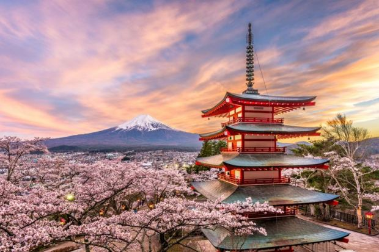

Tourist Spots
- Mount Fuji: An active volcano, is covered with snow for 5 months in a year. It is also visible from Tokyo. One of Japan's three sacred mountains.
- Osaka Castle: One of Japan's most famous landmarks. Over 500 years old

Tourist Spots
- Beaches of Bali: Arguably Indonesia's most popular vacation spot, Bali has a number of cultural landmarks and traditions that make a visit here worthwhile.
- Borobudur: This ancient temple is one of the most famous and culturally significant landmarks in Indonesia. Borobudur was built in the 8th century and constructed in the shape of a traditional Buddhist mandala. It is one of the top UNESCO World Heritage sites, and is considered one of the greatest Buddhist sites in the world.